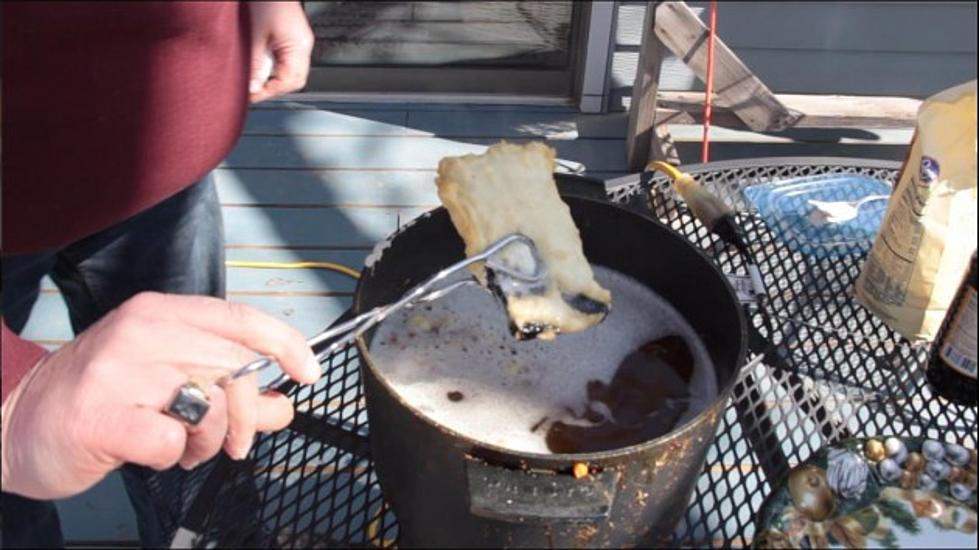

Deep Fried Phone

Ingreidents
- Phone
- Salt
- Oil
- Ginger
- Peprika
- Pepper
- 1/4 tablespoon of chopped green onions
- 1/4 tablespoon of diced onion
- 1/4 tablespoon crushed garlic
Cooking Instructions
- Take the phone and brine it in a combination of salt, peprika and pepper for no less than 72 hours
- Saulte the onions garlic and ginger in the oil
- fry the phone until cracked and golden brown
- top the phone with the veg